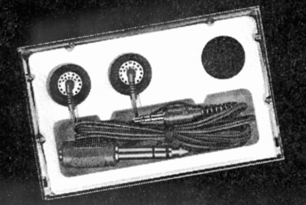

DSR-27

■価格 3,300円■型式 ダイナミック型■振動板■インピーダンス 32Ω ■再生周波数帯域 20-20,000Hz■許容入力 50mW■感度 102ｄB/mW■コード 1.2ｍステレオミニプラグ■重量 5g（コード含まず）■発売 1983年頃■販売終了 ?■備考 DSR-28と同時にデビューしたと思われる上位機種雑誌広告に掲載されていたが、ステレオガイドには非掲載。
アズデンのインデックスヘ